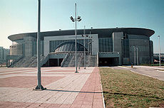

Kultura
Beograd je domaćin mnogim kulturnim manifestacijama, uključujući FEST (Međunarodni filmski festival), BITEF (Beogradski internacionalni teatarski festival), BELEF (Beogradski letnji festival), BEMUS (Beogradske muzičke svečanosti), Beogradski sajam knjiga, i Beogradski festival piva. Dobitnik Nobelove nagrade Ivo Andrić je napisao svoja najpoznatija dela: „Na Drini ćuprija” i „Prokleta avlija” u Prizrenskoj ulici u Beogradu. Ostali istaknuti srpski književnici koji su živeli i radili u Beogradu su: Branislav Nušić, Miloš Crnjanski, Borislav Pekić, Milorad Pavić, Meša Selimović i mnogi drugi. Većina srpske filmske industrije se nalazi u Beogradu, a jedan od najpoznatijih filmova snimljenih ovde je i film Emira Kusturice iz 1995, dobitnik Zlatne palme na Kanskom festivalu — Podzemlje. Grad je bio jedan od glavnih centara jugoslovenskog „novog talasa”: VIS Idoli, Ekatarina Velika i Šarlo Akrobata muzički bendovi koji su svi iz Beograda. Ostali poznati beogradski rok umetnici: Riblja čorba, Bajaga i instruktori i ostali. Tokom devedesetih, grad je bio glavni centar (u bivšoj Jugoslaviji) muzičkog žanra turbofolk. Danas je centar srpske hip hop scene, sa izvođačima kao što su Beogradski Sindikat, Škabo, Marčelo i mnogi drugi.[53] Beograd takođe ima mnogo pozorišta, a najpoznatiji među njima su Beogradsko narodno pozorište, Jugoslovensko dramsko pozorište, Zvezdara teatar, i Atelje 212. U Beogradu se nalazi i Srpska akademija nauka i umetnosti, Narodna biblioteka Srbije i Istorijski arhiv Beograda.
Muzeji

Najpoznatiji muzej u Beogradu je Narodni muzej, osnovan 1844. godine. Sadrži kolekcije više od 400.000 izložbenih materijala, uključujući mnoga strana remek-dela. Poznato Miroslavljevo jevanđelje se nalazi u ovom muzeju. Vojni muzej je naročito popularan za strane turiste, najviše zbog delova „nevidljivog” (stelt) aviona F-117 kog je jugoslovenska protivvazdušna odbrana oborila u toku NATO bombardovanja 1999. U muzeju se takođe nalazi još preko 25.000 ostalih izložbenih predmeta od kojih neki datiraju iz rimskog perioda. Sličan muzej je Muzej jugoslovenskog vazduhoplovstva koji ima više od 200 aviona, od kojih su 50 stalna postavka. Nekoliko aviona u Muzeju su jedini „preživeli” primerci tog tipa, kao npr. Fijat G.50. Muzej izlaže i neke delove oborenih američkih i NATO aviona. Etnografski muzej, osnovan 1901, sadrži više od 150.000 predmeta ruralne i urbane kulture Balkana, tačnije država bivše Jugoslavije. Muzej savremene umetnosti sadrži kolekciju sa oko 8.540 primeraka umetničkih dela iz Jugoslavije od 1900. godine. Muzej Nikole Tesle, osnovan 1952. godine, čuva lične stvari Nikole Tesle, naučnika po kome je jedinica Tesla dobila ime. Muzej čuva oko 160.000 originalnih dokumenata i oko 5.700 ostalih predmeta. Još jedan od većih beogradskih muzeja je Muzej Vuka i Dositeja, koji sadrži eksponate koji govore o životu, delu i zaveštanju Vuka Stefanovića Karadžića i Dositeja Obradovića, reformatora srpskog književnog jezika iz 19. veka koji su takođe ujedno i bili prvi ministri srpskog obrazovanja.[58] U Beogradu takođe postoji i Muzej afričke umetnosti, osnovan u vreme socijalističke solidarnosti sa nerazvijenim nacijama Trećeg sveta.
Obrazovanje

Beograd ima tri državna univerziteta i više privatnih institucija za više i visoko obrazovanje. Beogradski univerzitet vodi poreklo od Velike škole, osnovane 1808. Prvi srpski univerzitet formalno je osnovan 27. februara 1905. Više od 70.000 studenata studira na Beogradskom univerzitetu na ukupno 31 fakultetu. Pored fakulteta, univerzitet je sačinjen i od Univerzitetske biblioteke „Svetozar Marković”, naučno istraživačkih instituta i centara, od kojih su najpoznatiji Institut za nuklearne nauke Vinča, Elektrotehnički institut Nikola Tesla, Institut Mihajlo Pupin... Dana 21. maja 1973. godine, umetničke akademije prerasle su u fakultete umetnosti, a Umetnička akademija postala je Univerzitet umetnosti, drugi samostalni beogradski univerzitet. Od 2011. godine postoji i Univerzitet odbrane, koji u svom sastavu ima dva fakulteta, vojnu i vojnomedicinsku akademiju. Nauno-istraživačke institucije Vojske Srbije koje se nalaze u Beogradu su Vojnogeografski institut, Vazduhoplovnomedicinski institut i Vojnotehnički institut Beograd (nekada Vazduhoplovnotehnički institut). U Beogradu postoji 195 osnovnih i 85 srednjih škola. Od osnovnih, postoji 162 redovnih, 14 specijalnih, 15 umetničkih i četiri škole za osnovno obrazovanje odraslih. Srednjoškolski sistem obuhvata 51 stručnu, 21 gimnaziju, 8 umetničkih i pet specijalnih škola. 230.000 upisanih učenika uči 22.000 zaposlenih u preko 500 objekata, koji pokrivaju oko 1.100.000 m2.
Arhitektura
U različitim delovima grada arhitektura varira od tipično centralnoevropskog stila (Zemun), preko izvesnog broja zgrada u turskom stilu lociranih u starim delovima grada, do najsavremenije arhitekture Novog Beograda. Arhitektura 19. veka je dosta uticala na arhitektonske trendove u Srbiji, pa i u Beogradu. Naročito je vidljiv uticaj austrougarske arhitekture 19. veka. Pod socijalizmom, većina kuća je građena brzo i jeftino, što je dovelo do brutalističke arhitekture blokova Novog Beograda podignutih u prvim decenijama nakon Drugog svetskog rata.
Noćni život
Beograd ima reputaciju prestonice koja nudi svakodnevni, živopisan noćni život, sa mnoštvom klubova otvorenih do svitanja širom grada. Najprepoznatljiviji su klubovi smešteni na splavovima duž obala Save i Dunava. Vikend-posetioci, posebno oni iz Makedonije, Bosne i Hercegovine, Hrvatske i Slovenije, smatraju Beograd većom metropolom od svojih prestonica zbog prijateljske atmosfere, sjajnih klubova i barova, pića, nepostojanja jezičke barijere, kao i liberalne regulative vezane za noćni život. Poznata mesta za ljubitelje alternativne muzike, odnosno kulture koja ne potpada pod mejnstrim, bili su afirmisani klubovi kao što su Akademija (Klub studenata na FLU), smeštena u podrumu Fakulteta likovnih umetnosti i KST (Klub studenata tehnike), smešten u podrumu zgrade Tehničkih fakulteta. Jedno od najpoznatijih mesta za alternativne kulturne događaje u gradu je SKC (Studentski kulturni centar), koji se nalazi preko puta Beograđanke, jedne od najznamenitijih građevina Beograda. Koncerti brojnih domaćih i poznatih stranih grupa se često održavaju u SKC-u, kao i umetničke izložbe i javne debate i diskusije. Oni koji su naklonjeni tradicionalnijem srpskom noćnom životu, a ljubitelji su starogradske muzike, tipične za severne krajeve Srbije, mogu da se odluče za veče u Skadarliji, staroj boemskoj četvrti grada gde su se okupljali pesnici i umetnici krajem XIX i početkom 20. veka. U Skadarskoj ulici i okolini nalaze se neki od najstarijih beogradskih restorana. Na jednom kraju četvrti nalazi se nekadašnja najstarija beogradska pivara, osnovana u prvoj polovini 19. veka.
Sport

U Beogradu postoji oko hiljadu sportskih objekata, od kojih mnogi svojim kapacitetom zadovoljavaju potrebe velikih i gotovo svih vrsta sportskih događaja. Beograd je bio domaćin mnogim bitnim sportskim događajima u bliskoj prošlosti, kao što su Evropsko prvenstvo u fudbalu 1976., Evropsko prvenstvo u košarci 2005., Evropsko prvenstvo u odbojci 2005., Evropsko prvenstvo u vaterpolu 2006., Evropski olimpijski festival mladih 2007, Letnja univerzijada 2009., Evropsko prvenstvo u rukometu 2012., Svetsko prvenstvo u rukometu 2013. i Evropsko prvenstvo u vaterpolu 2016. Beograd se dva puta neuspešno kandidovao za Letnje olimpijske igre i to za Olimpijadu 1992., kada je ispao u trećem krugu glasanja Međunarodnog olimpijskog komiteta (tada su se igre održale u Barseloni), i Letnje olimpijske igre 1996., kada je grad domaćin bila Atlanta. Beograd je dom dva najveća i najuspešnija sportska društva u Srbiji, Crvene zvezde i Partizana. Dva najveća fudbalska stadiona u Beogradu su Stadion Rajko Mitić (stadion „Crvene zvezde”) i Stadion Partizana (stadion „JNA”). Beogradska arena se koristi za košarkaške i odbojkaške utakmice, zajedno sa Halom Pionir, dok se Sportski centar „Tašmajdan” koristi za vaterpolo utakmice. Ada Ciganlija je bivše ostrvo na reci Savi i najveći beogradski sportsko-rekreativni kompleks. Nakon njegovog povezivanja s obalom, napravljeno je veštačko jezero. Jedna je od najpoznatijih destinacija za Beograđane tokom vrelog leta. Ada Ciganlija ima 7 km dugu plažu i objekte za razne sportove uključujući golf, ragbi, fudbal, košarku, odbojku, bejzbol i tenis. Ekstremni sportovi su takođe dostupni, kao što su bandži džamping, skijanje na vodi i pejntbal. Na ostrvu se nalaze i staze za vožnju bicikla, šetnju i džogiranje.
Turizam

Od 2000. godine, uporedo sa obnavljanjem diplomatskih odnosa Srbije sa zapadnom Evropom i Amerikom, u Beogradu se primećuje povratak stranih turista odsutnih još od ratova iz devedesetih godina. Istorijski delovi i zgrade Beograda su najveće gradske turističke atrakcije. One uključuju Skadarliju, Narodni muzej, Narodno pozorište, Zemun, Trg Nikole Pašića, Milošev konak, Konak kneginje Ljubice, Terazije, Studentski trg, Kalemegdan, Knez Mihailovu ulicu, Dom Narodne skupštine, Hram Svetog Save i Stari dvor. Pored ovoga, postoje mnogi parkovi, spomenici, muzeji, kafići, restorani i prodavnice i to sa obe strane reke Save. Mauzolej Josipa Broza Tita, nazvan Kuća cveća, parkovi, Ada Ciganlija, Topčider i Košutnjak koji se nalaze u blizini su takođe popularni, posebno posetiocima iz bivše Jugoslavije. U poslednje vreme broj mladih posetilaca se veoma uvećao, naročito onih iz Hrvatske, Slovenije i Bosne i Hercegovine koji uživaju u noćnom životu grada.
О Beogradu
Ostalo
© Copyright 2018 MR